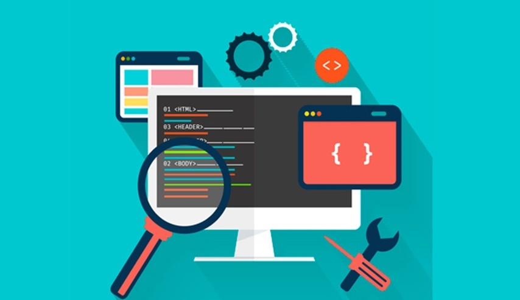
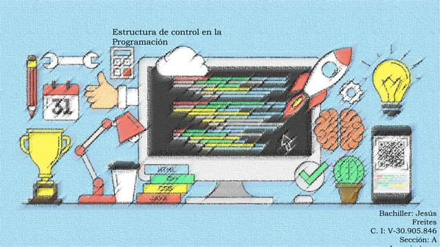
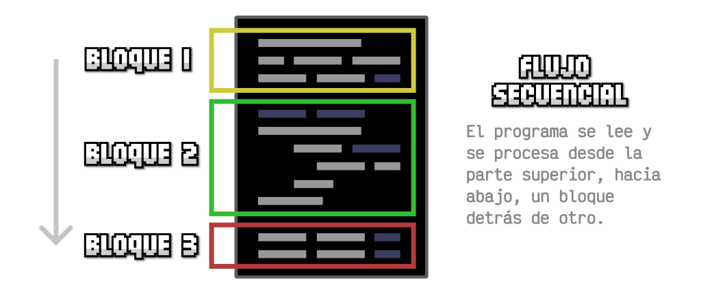
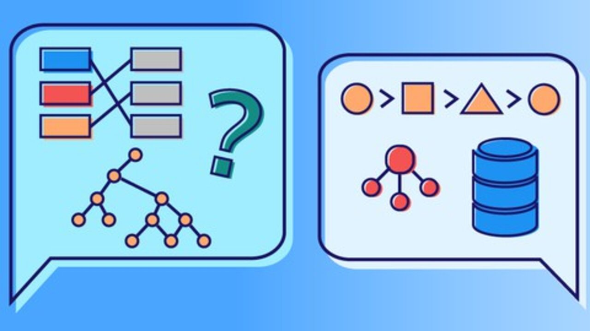
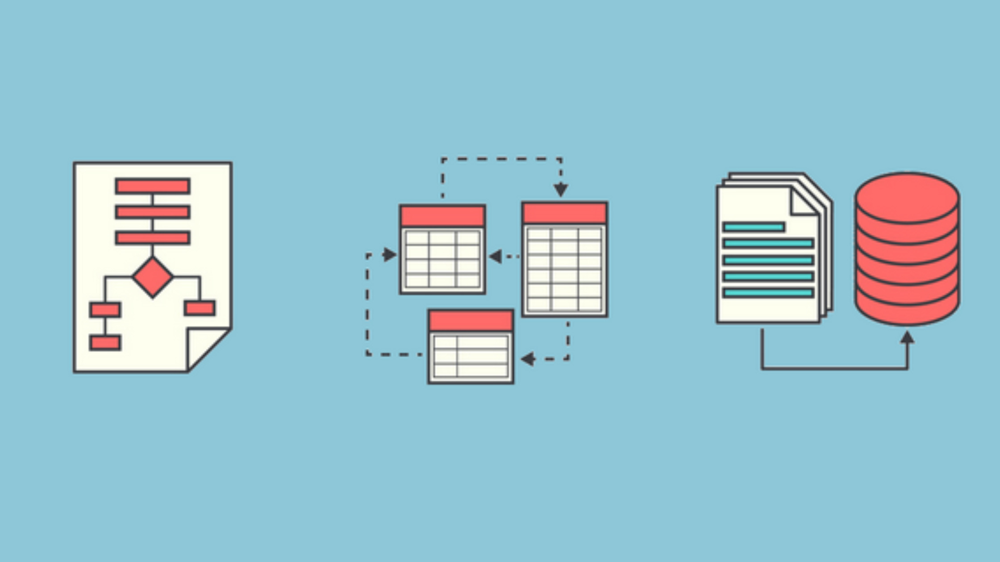

módulo I TPROG Desarrolla software de aplicación con programación estructurada
El módulo I TPROG se centra en desarrollar software de aplicación utilizando programación estructurada. En este módulo, se busca que los estudiantes adquieran las habilidades necesarias para crear aplicaciones informáticas mediante el uso de principios de programación estructurada, que es un enfoque que enfatiza el uso de estructuras de control claras y bien definidas, como secuencias, condicionales y bucles.
Contenido principal
El contenido principal del módulo se enfoca en la programación estructurada, enseñando a escribir código claro, fácil de mantener y entender,
evitando técnicas como el "goto" y promoviendo el uso de funciones y subprogramas bien definidos.
Los estudiantes aprenden a desarrollar software de aplicación,
diseñando, desarrollando e implementando programas que resuelvan problemas específicos en diversas áreas, utilizando los principios de la programación estructurada.
El módulo profundiza en el uso de estructuras de control como secuenciales (ejecutar instrucciones en un orden determinado),
condicionales (tomar decisiones basadas en condiciones como if, else) y repetitivas (bucles, como for y while). También se enseña modularización,
es decir, cómo dividir el código en módulos o funciones para facilitar su mantenimiento y reutilización.

Submódulo 1: Construye Algoritmos para la Solución de Problemas
El submódulo TPROG M1S1 (probablemente del área de Tecnologías de la Información o Programación) tiene como objetivo enseñar a los estudiantes a construir algoritmos para la solución de problemas. Es parte de un módulo formativo que se enfoca en desarrollar habilidades para identificar, analizar y resolver p roblemas a través de la programación y el diseño de algoritmos.
En particular, el Módulo 1, Sesión 1 (M1S1) sugiere que la primera unidad de este submódulo tiene como propósito introducir el concepto de algoritmos y su construcción, abarcando los siguientes aspectos:
Contenido este submódulo:
El submódulo TPROG M1S1 se enfoca en enseñar qué es un algoritmo, sus características y su importancia para resolver problemas de manera eficiente. Para crear algoritmos, se abordan pasos clave como la identificación clara del problema, la descomposición en partes más simples y la elección de las estrategias de resolución adecuadas. Además, se enseña a representar algoritmos mediante diagramas de flujo, que son herramientas gráficas para mostrar los pasos del proceso, y pseudocódigo, que describe el algoritmo de forma estructurada y más cercana al lenguaje natural. También se exploran diferentes tipos de algoritmos, como secuenciales, condicionales y repetitivos, y se proporcionan ejemplos prácticos para resolver problemas sencillos, como calcular números, ordenar listas o buscar elementos.
Objetivos
Los objetivos del submódulo son desarrollar habilidades lógicas y analíticas mediante la práctica de diseñar algoritmos para resolver problemas, y fomentar el pensamiento computacional, capacitando para abordar problemas complejos dividiéndolos en partes más pequeñas y manejables.
TPROG MIS2 Aplica estructuras de control con un lenguaje de programación
se enfoca en la aplicación de estructuras de control utilizando un lenguaje de programación. En este módulo, los estudiantes aprenden a implementar y utilizar las principales estructuras de control, que son fundamentales para la programación y permiten tomar decisiones y controlar el flujo de ejecución del código.
Contenido principal del submódulo:
El contenido principal del submódulo se centra en las estructuras de control, fundamentales para dirigir el flujo de ejecución en un programa. En primer lugar, se abordan las estructuras condicionales, como if, else, y else if, que permiten tomar decisiones dentro del código, ejecutando diferentes bloques de código según se cumpla o no una condición específica.
Además, se estudian las estructuras repetitivas o bucles, como for, que ejecutan un bloque de código un número determinado de veces, y while o do-while, que repiten un bloque de código mientras se cumpla una condición. También se trata las estructuras de selección múltiple, como switch, en ciertos lenguajes de programación, que permiten elegir entre varias opciones posibles según el valor de una variable. Los estudiantes aplican estos conceptos en un lenguaje de programación como Python, Java o C++, escribiendo y ejecutando código que hace uso de estas estructuras.
Objetivos
Los objetivos del submódulo son dominar las estructuras de control para dirigir el flujo de ejecución de un programa y aplicar esas estructuras de manera efectiva en un lenguaje de programación real, con el fin de resolver problemas concretos.
TPROG MIS3 Aplica estructuras de datos con un lenguaje de programación
En este módulo, los estudiantes aprenden a manejar y utilizar diferentes tipos de estructuras de datos, que son fundamentales para almacenar y organizar la información de manera eficiente en un programa. Estas estructuras permiten optimizar la gestión de datos y facilitar la resolución de problemas complejos.
Contenido principal del submódulo:
El contenido principal del submódulo se centra en las estructuras de datos, donde se estudian las principales estructuras como arreglos (o arrays), listas, pilas (stacks), colas (queues), conjuntos (sets) y diccionarios (o mapas). Cada una de estas estructuras tiene características particulares y es adecuada para distintos tipos de problemas. Los estudiantes aplican estas estructuras utilizando un lenguaje de programación como C++, aprendiendo cómo implementarlas, manipular los datos que contienen y realizar operaciones fundamentales como inserción, eliminación, búsqueda y modificación. Además, se enseña la optimización del uso de estructuras de datos, guiando a los estudiantes para elegir la estructura más adecuada según el problema a resolver, teniendo en cuenta aspectos como el tiempo de acceso, la eficiencia de las operaciones y el uso de memoria.
Objetivos
Los objetivos del submódulo son dominar el uso de estructuras de datos para almacenar y organizar información de manera eficiente, y aplicar estas estructuras de manera efectiva en un lenguaje de programación real, optimizando la gestión de datos y resolviendo problemas específicos.
